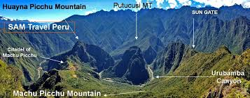
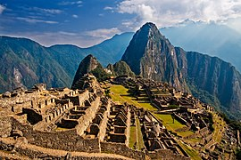

Machu Picchu is a 15th-century Inca citadel located in the Eastern Cordillera of southern Peru on a 2,430-meter (7,970 ft) mountain ridge.[2][3] Often referred to as the "Lost City of the Incas", it is the most familiar icon of the Inca Empire. It is located in the Machupicchu District within Urubamba Province[4] above the Sacred Valley, which is 80 kilometers (50 mi) northwest of Cusco. The Urubamba River flows past it, cutting through the Cordillera and creating a canyon with a tropical mountain climate.[5] In reference to the site’s name, for most speakers of English or Spanish, the first 'c' in Picchu is silent. In English, the name is pronounced /ˌmɑːtʃuː ˈpiːtʃuː/[6][7] or /ˌmætʃuː ˈpiːktʃuː/,[7][8] in Spanish as [ˈmatʃu ˈpitʃu] or [ˈmatʃu ˈpiɣtʃu],[9] and in Quechua (Machu Pikchu)[10] as [ˈmatʃʊ ˈpɪktʃʊ].


Machu Picchu lies in the southern hemisphere, 13.111 degrees south of the equator.[74] It is 80 kilometers (50 miles) northwest of Cusco, on the crest of the mountain Machu Picchu, located about 2,430 meters (7,970 feet) above mean sea level, over 1,000 meters (3,300 ft) lower than Cusco, which has an elevation of 3,400 meters (11,200 ft).[74] As such, it had a milder climate than the Inca capital. It is one of the most important archaeological sites in South America, one of the most visited tourist attractions in Latin America and the most visited in Peru.[75]Machu Picchu features wet humid summers and dry frosty winters, with the majority of the annual rain falling from March through to October.